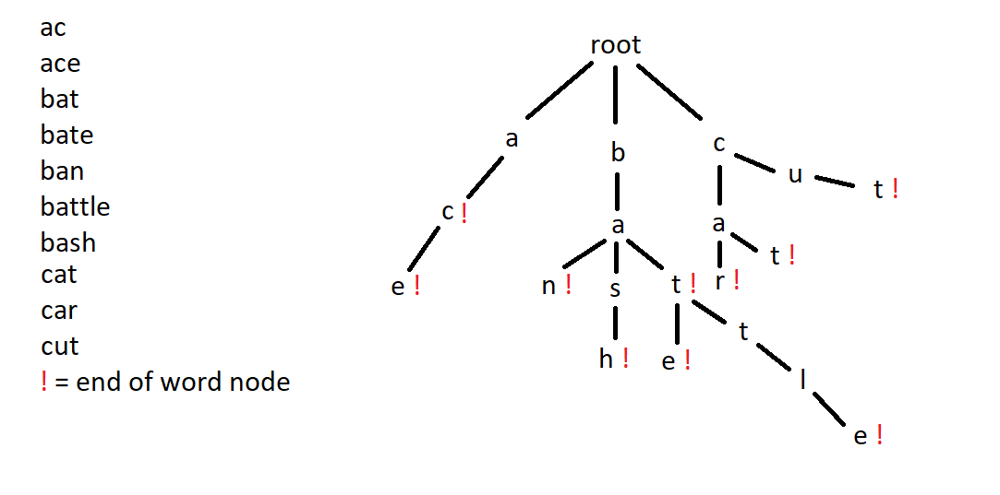
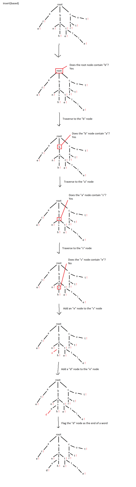
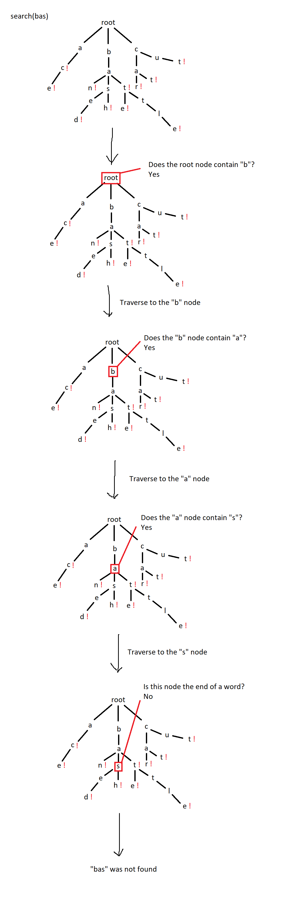
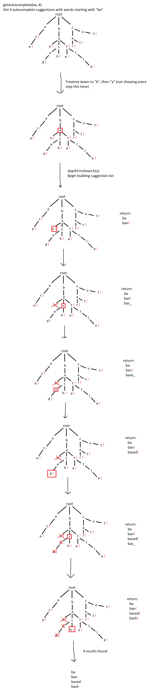

Autocomplete Demo
{{option}}
What is it?
This is a demo of an implementation of autocomplete. It was made to efficiently search very large data sets of
strings. It takes a text input and returns a specified number of words containing that input. The data set used
for searching can be found at
https://www.mit.edu/~ecprice/wordlist.10000.
How it Works
It uses an implementation of the trie data structure to faciliate these efficient searches. A trie is a type of
tree where each node is a key of some kind. In this case, each node is a single character. Each word exists as a
chain of letter nodes in the trie (e.g. “cat” would have “c” as the child of the root node, “a” as the child
of “c” and “t” as the child of “a”). The end of a word is signified with a boolean flag.
Each node is essentially just an array with a length corresponding to however many characters are possible in the search
space (in my case, 26) and an end flag. When a child is added to a node, it is inserted in its corresponding index in
the parent’s array (the index can be determined by a lookup table or using ascii codes). Because of the tree structure and
the fact that nodes are automatically sorted upon insertion, traversal of the trie is extremely efficient, thereby making insertion
and searching extremely efficient.

close
Once a trie is established, autocomplete just requires traversal up to a certain point in that trie, then a depth-first
search on the last node of that traversal. In my implementation, you are able to specify a maximum number of suggestions,
which can stop the search after a point, further increasing efficiency, as the depth-first search does not always need to finish.
Note: Render will try to rebuild the backend if it hasn't been used for a while, so it can take quite a while to access this page.
Function Examples
Insert example:

close
Search fail example:

close
Search success example:
close

Full autocomplete example:

close